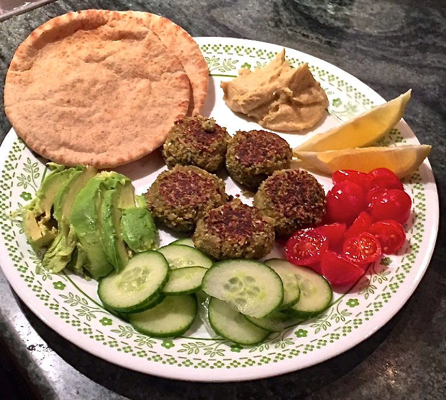
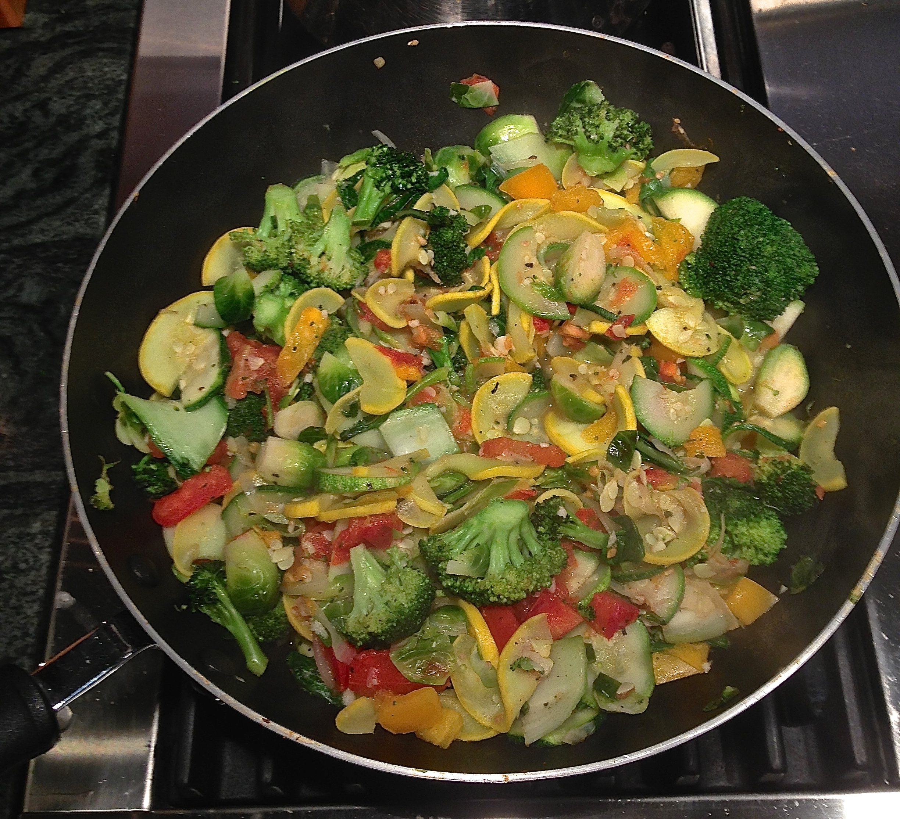
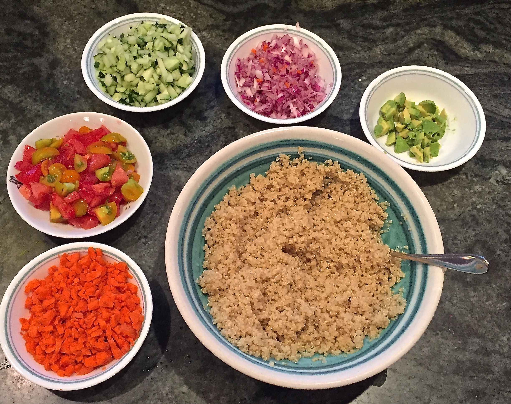
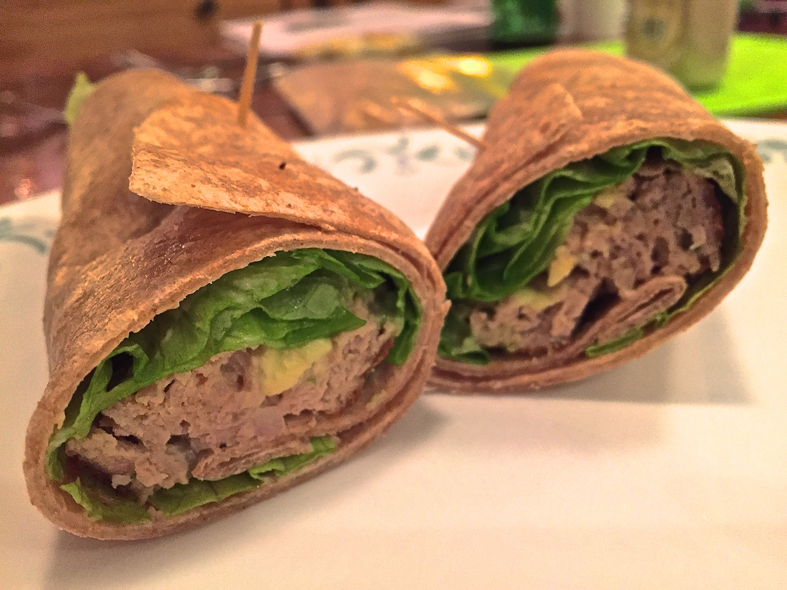
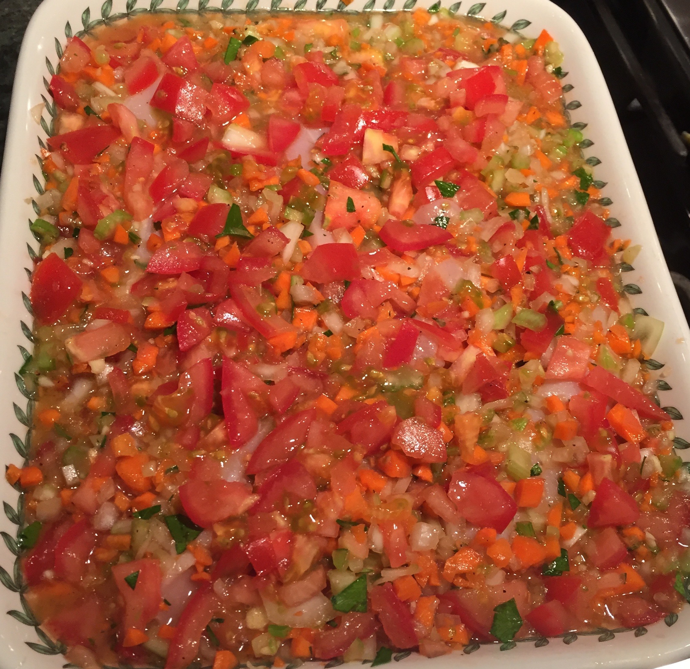

Fresh Recipes
Search
Browse
About

Mix'n'Match Sandwich
By Ned & Hannah Ned

Sizzling Stir Fry
By Hannah Ned

Serena's Famous Quinoa Salad
By Serena Walsh

Turkey Burger Wrap
By Ed Nardi
Holiday Toffee
By Hannah Nardi

Grandma Nardi's Famous Vegetable Chicken
Grandma Nardi